The interaction layer for the 80×80 world: where players take work, trade, craft and upgrade. Same pixlib generators, RAMP-only palette, 1px #0a0810 void outline, dither not blur, bottom-center anchors, crispEdges. The Roaming Trader rides the wanderer rig; salvage FX are ADDITIVE (un-outlined); claim props ride the Furnisher pipeline.
Weathered timber + drift-stained parchment. bounty_board is the flagship “go get work” object. Wells at 2×; gold dash = top label-clear, gold pin = bottom-center anchor.
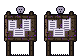
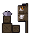
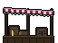
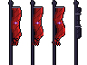
Roadside resource-camp stations (idle/ember/flame loops) + ADDITIVE, un-outlined salvage FX. FX shown at 3×.
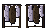
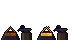
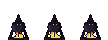
Wanderer-rig compatible — 32×40, 5 facings (engine mirrors w/sw/nw), idle 2f + walk 6f. Sheet = facings as rows, frames as columns. One ramp-swap cloth channel. The pack_mule companion trails him (4 facings, walk 4f).
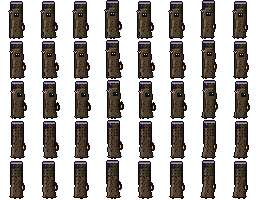
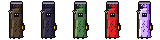
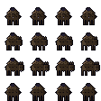
Furnisher-pipeline props placed on claimed ground. claim_ward / rune_anvil carry drift glow + rune loops; all carry a solid-collision flag.
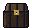
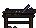
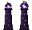
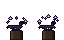